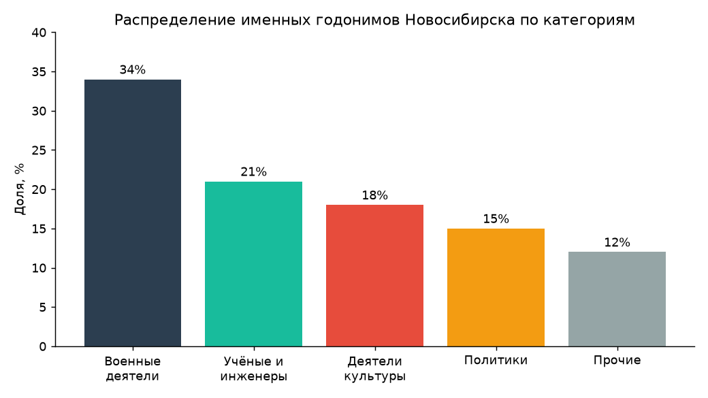

Город как текст: топонимика Новосибирска
Итоговый проект по курсу «Цифровые технологии в профессиональной деятельности»
Оствальд Артём
1О проекте
Городские названия — это не нейтральные ярлыки на карте, а форма коллективной памяти. Через имена улиц, площадей и переулков город «рассказывает», кого и что он считает достойным увековечения. Проект «Город как текст» рассматривает топонимию Новосибирска как исторический источник и пытается прочитать её количественно.
Идея проста: если собрать все годонимы (названия линейных объектов — улиц, проспектов, переулков) и связать их с тем, в честь кого или чего они даны, то можно увидеть, какая именно картина прошлого закреплена в городском пространстве. Кто представлен чаще — военные или учёные? Мужчины или женщины? Какая эпоха доминирует?
Работа опирается на открытые данные OpenStreetMap (геометрия и названия улиц) и Wikidata (сведения о людях, в честь которых названы объекты). Их объединение позволяет перейти от простого списка названий к структурированному датасету, пригодному для анализа.
2Исследовательские вопросы
Проект отвечает на три группы вопросов:
- Гендерный срез. Какова доля улиц, названных в честь женщин, и как она менялась со временем?
- Профессиональный срез. Какие сферы деятельности (война, наука, культура, политика) преобладают среди «именных» улиц?
- Хронологический срез. К каким историческим эпохам относятся увековеченные личности и события?
3Источники и методы
План работы по шагам:
- Выгрузить дорожную сеть Новосибирска из OpenStreetMap (теги
highway,name). - Отобрать «именные» годонимы и сопоставить их с записями в Wikidata.
- Извлечь из Wikidata свойства: пол (
P21), род занятий (P106), даты жизни (P569/P570). - Свести данные в таблицу и посчитать распределения по категориям.
- Визуализировать результат на интерактивной карте и в виде графиков.
Ключевые инструменты — Python и его экосистема для работы с данными:
import osmnx as ox
import pandas as pd
# Дорожная сеть Новосибирска из OpenStreetMap
graph = ox.graph_from_place("Новосибирск, Россия", network_type="drive")
edges = ox.graph_to_gdfs(graph, nodes=False)
# Уникальные названия улиц
streets = (
edges["name"]
.dropna()
.explode()
.drop_duplicates()
.sort_values()
)
print(f"Найдено уникальных годонимов: {len(streets)}")Для оценки «плотности» памяти удобно ввести простой показатель — долю именных улиц от общего числа:
$$\text{NamedRatio} = \frac{N_{\text{персональные}}}{N_{\text{всего}}}$$
4Предварительные результаты
По предварительной выборке (демонстрационные данные) распределение именных годонимов по категориям выглядит так:
| Категория | Примеры | Доля |
|---|---|---|
| Военные деятели | ул. Жукова, ул. Покрышкина | 34% |
| Учёные и инженеры | ул. Лаврентьева, ул. Ватутина | 21% |
| Деятели культуры | ул. Чехова, ул. Гоголя | 18% |
Гендерный дисбаланс заметен сразу: подавляющее большинство персональных названий посвящено мужчинам. Это согласуется с наблюдением исследователей городской памяти:
Карта города — это всегда выбор. То, что нанесено на неё, кто-то когда-то счёл достойным памяти; то, чего на ней нет, было этой памяти лишено.
Ниже — распределение категорий в виде диаграммы:

5Интерактивная карта
Каждая точка — улица, названная в честь человека; цвет соответствует категории. Карту можно приближать и наводить курсор на точки.
6Что дальше
Ближайшие планы по развитию проекта:
- расширить выборку на все районы города и автоматизировать сопоставление с Wikidata;
- добавить временную шкалу переименований (советский / постсоветский периоды);
- сравнить Новосибирск с другими городами Сибири.
Исходный код и данные проекта опубликованы в репозитории на GitHub.